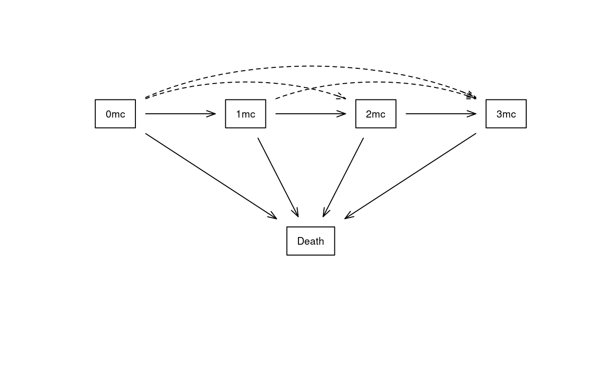
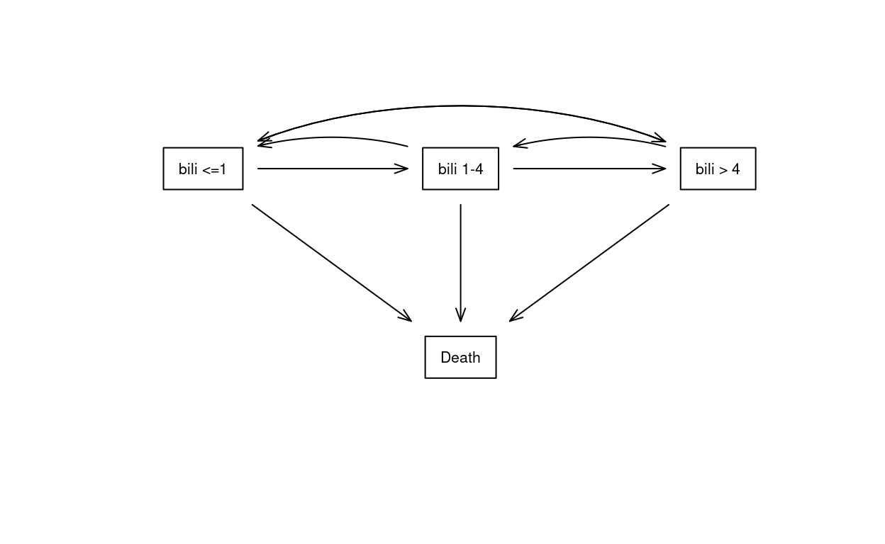
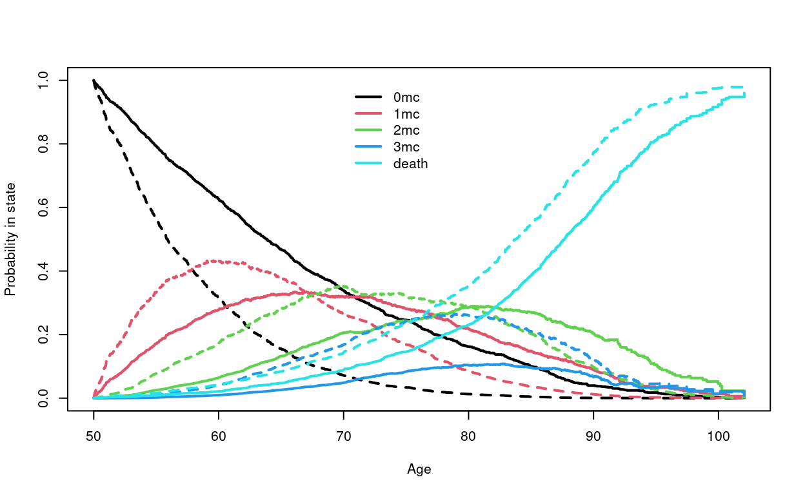
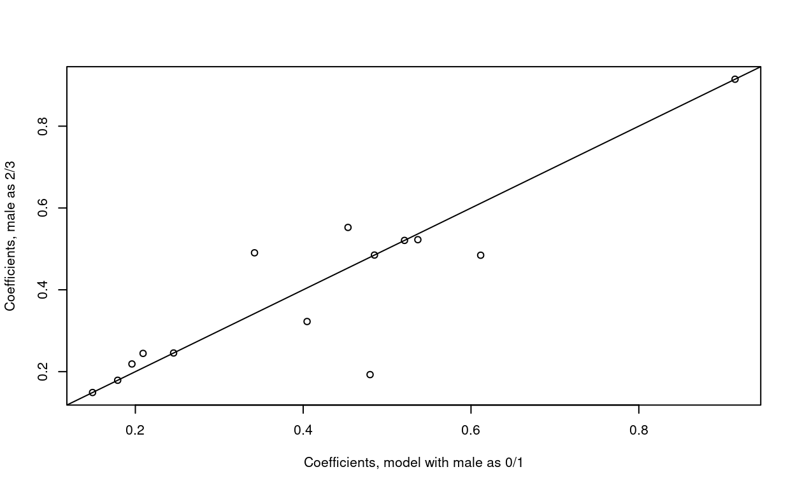

Baseline hazard
|
|||
|---|---|---|---|
| Separate | Proportional | Identical | |
| Separate coefficients | 1 | 2 | 3 |
| Shared coefficients | 4 | 5 | 6 |
Shared coefficients and shared baseline
This vignette is still an early draft.
1 Background
A multi-state hazards (MSH) model will model the transitions between multiple states. An example is analysis of the NAFLD data, whose transition diagram is shown in Figure 1; living patients will have 0–3 of the following metabolic comorbidities: diabetes, hypertension, and hyperlipidemia. In this figure there are 10 transitions (arrows). For any given pair of transitions a:b and c:d there are 6 different choices to organize the coefficients and baseline hazards, shown in Table 1. This document explores both technical and statistical aspects of those choices.
2 Data
We will use two running examples in this document. The first is data on non-alcoholic liver disease (NAFLD) which is represented by the state space shown in Figure 1. Living subjects can have one or more of three metabolic comorbidities of diabetes, hypertension and hyperlipidemia. The study focuses on the impact of a NAFLD diagnosis on the rate at which subjects progress through the three states.

Below is the transition table for the data set.
A direct transition from 0 to 3 of the comorbidities can not occur, biologically; no one aquires both hypertension and diabetes on the exact same second of the exact same day. We observe 4 such transitions, however, because our observation of any subject is intermittent. These “jump” transitions, the dotted lines in Figure 1, are a motivation for shared coefficient models.
> check1 <- survcheck(Surv(age1, age2, event) ~ nafld + male, data=ndata,
id=id, istate=cstate)
>
> check1$transitions to
from 1mc 2mc 3mc death (censored)
0mc 1829 70 4 263 5705
1mc 0 1843 28 243 4567
2mc 0 0 1048 417 3687
3mc 0 0 0 441 2220
death 0 0 0 0 0
The primary biliary cholangitis state space is shown in Figure 2. The states in this example are created by categorization of the continuous bilirubin variable. Primary biliary cholangitis is an inflammatory disease, thought to be of auto-immune origin, characterized by a slow but inexhortable loss of the small bile ducts in the liver, as scar replaces functional tissue. Bilirubin and other markers of liver compromise rise slowly over time, then more quickly once the liver’s excess capacity has been exhausted. Figure 2 shows a multi-state model that includes bilirubin progression. Many of the reverse transitions (dotted lines in the figure) will be subjects whose true bilirubin value is currently near one of the cut points. There are very few observed jumps from normal bilirubin to \(>4\) or vice-versa (3 and 1, respectively).
3 Separate hazards
3.1 Separate coefficients
Separate coefficients and separate hazards for each transition is the default for a multi-state hazards (MSH) model using . The code below uses the NAFLD data.
> nfit1 <- coxph(Surv(age1, age2, event) ~ nafld + male, data = ndata,
id = id, istate = cstate)Warning in agreg.fit(X, Y, istrat, offset, init, control, weights =
weights, : Loglik converged before variable 8 ; beta may be infinite.> round(coef(nfit1, matrix=TRUE), 2) 1:2 1:3 2:3 1:4 2:4 3:4 1:5 2:5 3:5 4:5
nafld 0.93 0.31 0.53 1.51 0.08 0.48 0.63 0.53 0.55 0.06
male 0.16 0.54 0.25 12.80 0.02 0.15 0.43 0.47 0.36 0.16
attr(,"states")
[1] "0mc" "1mc" "2mc" "3mc" "death"The fit has given a warning about a potentially infinite coefficient. Indeed, a look at the coefficient matrix shows a value of 12.8 for male sex, for the 1:4 (0MC to 3MC) transition, exp(12.8) \(> 362000\) which is effectively infinite for a sample of 17 thousand subjects, and the log partial likelihood had not yet reached its maximum. Further checking shown below identifies that 0/4246 female and 4/3675 males who were “at risk” for a 0mc:3mc jump had such an event, the hazard ratio for male sex is \(.001/0 = \infty\). We will address this issue in Section 3.2.
> temp <- with(subset(ndata, cstate=="0mc"), table(event, male))
> temp <- rbind(temp, Total= colSums(temp))
> temp 0 1
censored 3152 2603
1mc 937 892
2mc 30 40
3mc 0 4
death 127 136
Total 4246 3675The underlying coxph code fits all 10 of the transitions in model nfit1 simultaneously by creating a stacked data set. Two internal matrices cmap and smap direct the setup of the computation.
> ## internal mapping matrices
> nfit1$cmap 1:2 1:3 2:3 1:4 2:4 3:4 1:5 2:5 3:5 4:5
nafld 1 3 5 7 9 11 13 15 17 19
male 2 4 6 8 10 12 14 16 18 20> nfit1$smap 1:2 1:3 2:3 1:4 2:4 3:4 1:5 2:5 3:5 4:5
(Baseline) 1 2 3 4 5 6 7 8 9 10>
> ## number of data rows in each state
> table(ndata$cstate)
0mc 1mc 2mc 3mc
7921 6764 5249 2749 The cmap and smap matrices are used by the internal stacker routine to create expanded data used for the partial likelihood solution. The result has an expanded X, Y and transition variables which contain first all the data rows for transition 1 (0mc:1mc, 7921 rows), then for transition 2 (0mc:2mc, 7921 rows, etc. up to transition 10 (3mc:death, 2749 rows). The transition variable has repeated values of 1, 1, … , 1, 2, … , 2, 3, … 10. The first block of the expanded Y has a simple 0/1 status with 1 for a transition from 0mc to 1mc for the observations in that block. The expanded X matrix is block diagonal for this fit, as shown in Equation 1. Here \(X^{(1)}\) is all the rows of the data that are at risk for the first transtion (7921 rows, 2 columns), and etc. to \(X^{(10)}\) for the tenth transition. The final matrix has 20 columns, one for each coefficient, and 65223 rows. The 20 coefficients for the 10 transitions are now fit all at once using a single call to the internal Cox model fitting routine agreg.fit, with the transition as a strata.
\[ \begin{equation} \left( \begin{array}{cccc} X^{(1)} &0 & \ldots & 0 \\ 0 & X^{(2)} & \ldots & 0 \\ 0 & \vdots & \ddots & \vdots \\ 0 & 0 & 0 & X^{(10)} \end{array} \right) \end{equation} \tag{1}\]
3.2 Shared coefficients
You will have noticed that nfit1 gave a warning message that coefficient 8 appears to be infinite, which is the estimated male effect for the 1:4 transition. There are only 4 0mc to 3mc transitions in the data, and all of them are males, so indeed the MLE solution is \(\hat \beta= \infty\); there simply are not enough events in this stratum to estimate 2 coefficients. The other two jumps of Omc:2mc and 1mc:3mc also have small counts.
Biologically, we know that acquisition of 2 new comorbidities on the same exact day does not actually happen. An alternative model is to have coefficients for an increase from 0mc to “one or more” and from 1mc to “two or more”. This is shown below.
> nfit2 <- coxph(list(Surv(age1, age2, event) ~ nafld + male,
1:2 + 1:3 + 1:4 ~ nafld + male / common,
2:3 + 2:4 ~ nafld + male/common),
data=ndata, id= id, istate= cstate)
> nfit2$cmap 1:2 1:3 2:3 1:4 2:4 3:4 1:5 2:5 3:5 4:5
nafld 1 1 3 1 3 5 7 9 11 13
male 2 2 4 2 4 6 8 10 12 14>
> round(coef(nfit2, matrix=TRUE), 2) 1:2 1:3 2:3 1:4 2:4 3:4 1:5 2:5 3:5 4:5
nafld 0.91 0.91 0.52 0.91 0.52 0.48 0.63 0.53 0.55 0.06
male 0.18 0.18 0.25 0.18 0.25 0.15 0.43 0.47 0.36 0.16
attr(,"states")
[1] "0mc" "1mc" "2mc" "3mc" "death"When the model formula is a list of formulas, the first formula is the default for all transtions and subsequent lines amend that formula for selected transtions. Variables can be add or removed in the same way as update.formula. The common modifier signals common coefficients for these variables and transitions.
The final model has 14 coefficients instead of 20, and the overall risk of exp(.18) = 1.2 for males for the 0:mc to 1+ transition is much more sensible. The expanded X matrix in this model will have the same number of rows as before, but 14 rather than 20 columns. It is no longer block diagonal, column 1 for instance now has non-zero entries in 3 different transition blocks.
The coefficient vector found in the fit object has 14 unique entries and the estimated variance/covariance matrix is 14 by 14, these are what are returned by the coef and vcov functions. These choices make the MSH model results better fit in to the standard Cox model framework. The matrix=TRUE modifier for coef gives a more user friendly printout.
3.3 Predicted values
For predicted values from a MSH model, we will normally want to show separate predictions for each transition. For linear predictors, this is facilitated by the matrix argument to coef.coxphms and vcov.coxphms, the MSH methods for the coef and vcov methods. For example
> eta2 <- model.matrix(nfit2) %*% coef(nfit2, matrix=TRUE)
> dim(eta2)[1] 22683 10> nrow(ndata)[1] 22683>
> v2 <- vcov(nfit2, matrix=TRUE)
> dim(v2)[1] 14 14The model.matrix function for the fit returns the standard X matrix, which is the correct object for this task, not the expanded one which was needed (temporarily) for computing the fit. Then eta2 is a matrix with one row for each observation in the data set and one column for each transition. This matrix contains more values than we need, formally. Observation 1 is a row with current state of cstate = 0mc, for instance, so one could argue that the 2mc:death entry of row 1 is not ``relevant’’ to that row of the data.
Predicted probability in state curves, however, are always for a hypothetical subject, in which case we do want all the predicted hazards, since all the hazards are needed to compute absolute risks. Remember that a predicted curve is for a particular subject (covariate values) at a particular time (age) in a particular starting state. We find it helpful to use the mental picture of “prediction for the patient currently sitting across from me in the examination room”, i.e., absolute prediction is always specific. For an ordinary alive/dead KM where everyone starts at time 0 we don’t have to think about starting state and starting time, but for multistate they are necessary.
> # predicted curves for a 50 year old female with and without NAFLD, who
> # starts with none of the comorbidities. Solid= NAFLD.
> dummy <- data.frame(nafld= 0:1, male=0)
> pstate2 <- survfit(nfit2, newdata=dummy, start.time=50, p0=c(1,0,0,0,0))
> plot(pstate2, col=rep(1:5, each=2), lty=1:2, lwd=2,
xlab="Age", ylab="Probability in state")
> legend(70, 1, c("0mc", "1mc", "2mc", "3mc", "death"), col=1:5, lty=1, lwd=2,
bty='n')
(Yet to do: show examples with predict())
5 Identical hazards
Identical hazards are a problem child. The issue is that such models will be at the mercy of how covariates are coded. As a simple case, consider the NAFLD data, and assume that the transitions to death have an identical hazard rather than a proportional one. It turns out that the impact of changing the coding of male sex from 0/1 to 2/3 is profound, with a different log-likelihood and multiple coefficient changes.
> nfit4a <- coxph(list(Surv(age1, age2, event) ~ nafld + male,
1:2 + 1:3 + 1:4 ~ nafld + male/common,
2:3 + 2:4 ~ nafld + male/common,
0:5 ~ 1/common),
data = ndata, id = id, istate = cstate)
> nfit4b <- coxph(list(Surv(age1, age2, event) ~ nafld + male23,
1:2 + 1:3 + 1:4 ~ nafld + male23/common,
2:3 + 2:4 ~ nafld + male23/common,
0:5 ~ 1/common),
data = ndata, id = id, istate = cstate)
>
> temp <- rbind(male01= nfit4a$log, male23= nfit4b$log)
> colnames(temp) <- c("Initial loglik", "Final loglik")
> temp Initial loglik Final loglik
male01 -40534.77 -40284.86
male23 -40534.77 -40260.73>
> plot(coef(nfit4a), coef(nfit4b), xlab="Coefficients, model with male as 0/1",
ylab= "Coefficients, male as 2/3")
> abline(0,1)
Many discussions mention a “common hazard function” as a modeling idea, but few have followed through on the consequences of assuming that \(\gamma =1\) uniformly.
If we also force common coefficients for all the covariates then the problem goes away, but that becomes, in essence, a single transition model of “either outcome”.
Speculation:
- The same sort of confusions occur in linear models with regression through the origin. I don’t know if that analogy is helpful, however.
- I think that part of the problem above is that the overall death rate for 3mc:death is substantially higher than 0mc:death, and so any other variable that is out of balance will get recruited as an alias for the missing \(\gamma\) coefficient. NAFLD prevalence, for instance, is .89 for the 0mc stratum and .56 for the 3mc stratum.